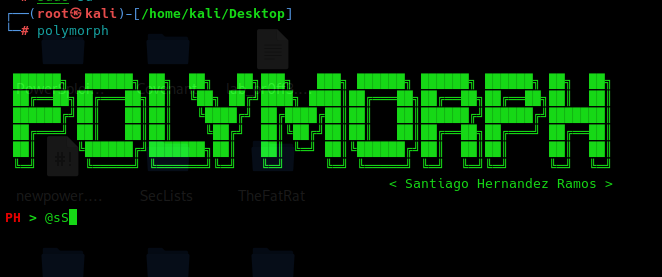

Estas técnicas no solo se basan en interferir los paquetes sino que se van a modificar en tiempo real para falsear los datos en los paquetes.
La herramienta que vamos a utilizar es Polymorph
https://github.com/shramos/polymorph
sudo su
sudo apt install build-essential python3-dev libnetfilter-queue-dev tshark tcpdump python3-pip wireshark git
pip3 install git+https://github.com/kti/python-netfilterqueue
pip3 install polymorph
polymorph

Primero capturamos un paquete igual al que queremos modificar.
Una vez que tenemos ese paquete capturado, genera lo que llama una plantilla y a partir de esa plantilla vamos a poder ejecutar funciones de código en Python sobre los nuevos paquetes de red que se estén intercambiando entre dos máquinas, de manera que podamos modificar su contenido.